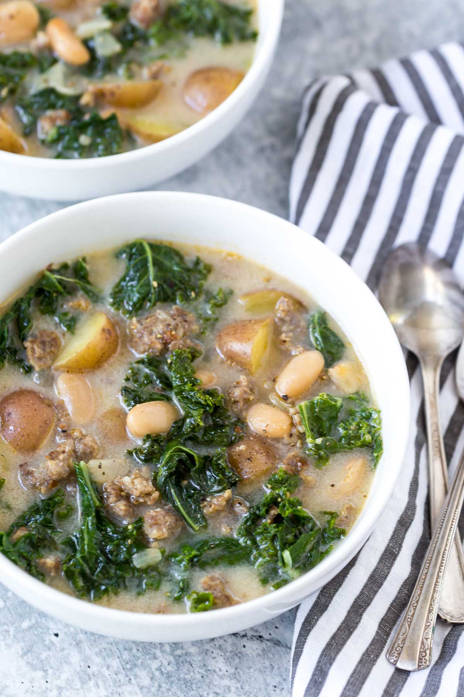

Italian Sausage Kale Soup

Home
Description
I first tasted this savory, nourishing soup when my sister made it a few years ago and brought it over to my dad's place for him to eat.
The flavors of pork, anise seed, sun dried tomatoes and chicken broth, combined with the heartiness of northern great beans and kale,
were unforgettable. I've made it many times for my family, though I'm probably the one who enjoys it most. You can think of this as an
over-the-top Italian wedding soup, that can serve as a meal on its own.
Ingredients
- 1 package (19-1/2 ounces) Italian sausage links, casings removed
- 1 medium onion, chopped
- 8 cups chopped fresh kale
- 2 garlic cloves, mixed
- 1/4 teaspoon crushed red pepper flakes, optional
- 1/2 cup white wine or chicken stock
- 3-1/4 cups chicken stock (26 ounces)
- 1 can (15 oz) cannellini beans, or great northern beans, rinsed and drained
- 1 can (14-1/2 oz) no-salt-added diced tomatoes, undrained
- 1/2 cup sun-dried tomatoes (not packed in oil), roughly chopped
- 1/4 teaspoon pepper
Steps
- In a large dutch oven pot or stockpot, cook sausage and onion over medium heat until no longer pink, breaking into crumbles, 6-8
minutes. Remove with a slotted spoon.
- Add kale to pot; cook and stir for 2 minutes. Add garlic and, if desired, pepper flakes; cook 1 minute. Add wine; cook 2 minutes longer.
- Stir in sausage mixture and remaining ingredients. Bring to a boil. Reduce heat; simmer, covered, until kale is tender, 15-20 minutes.